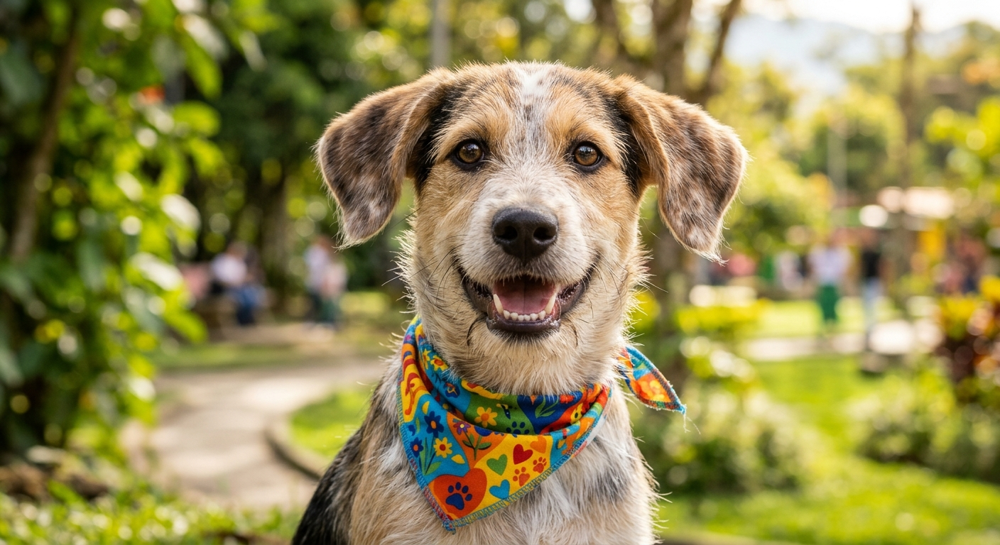
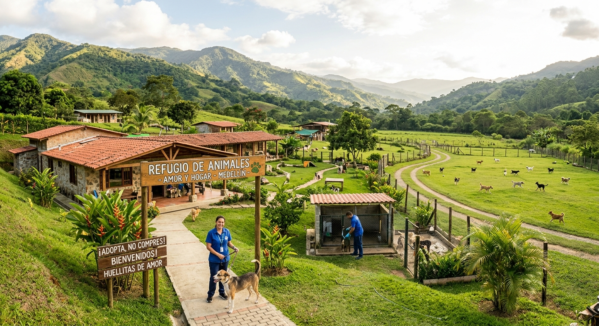
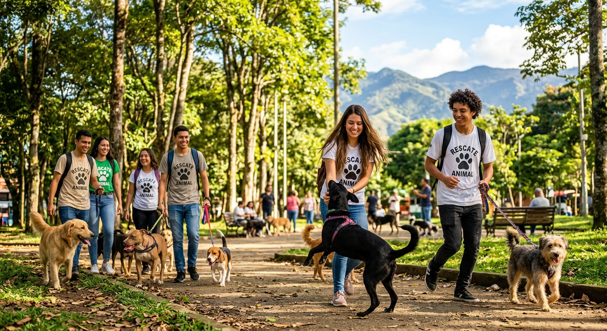

Adopción responsable
Te ayudamos a encontrar al perrito ideal para tu hogar. Entregamos a todos nuestros rescatados vacunados, desparasitados y esterilizados. Dale una segunda oportunidad a un amigo fiel.

Huellitas de Amor
Somos una fundación de Medellín dedicada al rescate, rehabilitación y adopción de perritos en situación de calle. Visítanos y encuentra nuestra ubicación para conocer a tu próximo compañero de vida.

Te ayudamos a encontrar al perrito ideal para tu hogar. Entregamos a todos nuestros rescatados vacunados, desparasitados y esterilizados. Dale una segunda oportunidad a un amigo fiel.

Tenemos una camadita de rescatados muy jóvenes buscando familias amorosas que les brinden un hogar seguro.
Si no puedes adoptar, puedes apoyarnos cuidando temporalmente a un perrito o participando en nuestras jornadas de paseo y baño. Descubre cómo ayudar mientras disfrutas de su compañía.
Consultar cómo ser voluntario u hogar de paso

Recibimos alimentos, cobijas, medicamentos y juguetes para mantener a nuestros rescatados con la mejor calidad de vida. Consulta los puntos de acopio disponibles.
Nuestro refugio se encuentra en Medellín. Consulta nuestra ubicación para agendar una visita o escríbenos para más información.